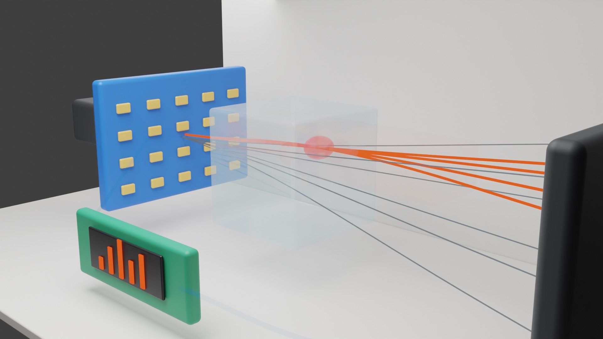
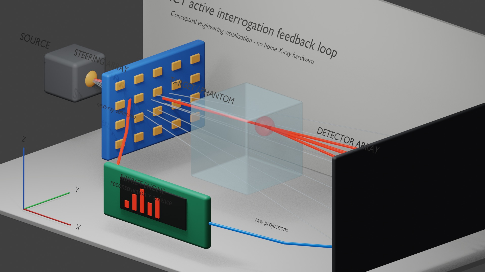
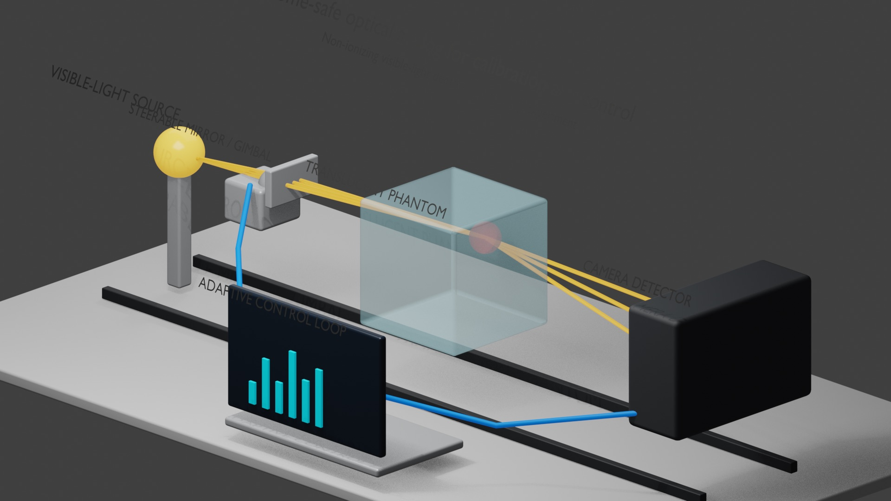
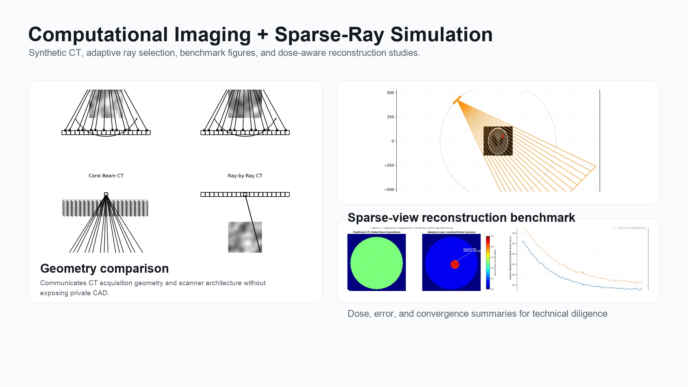
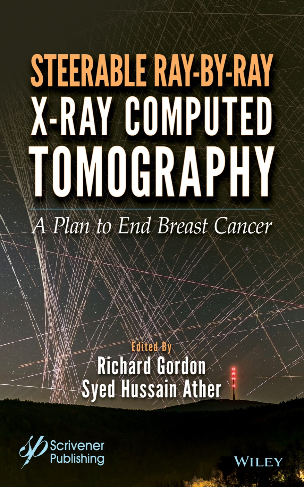
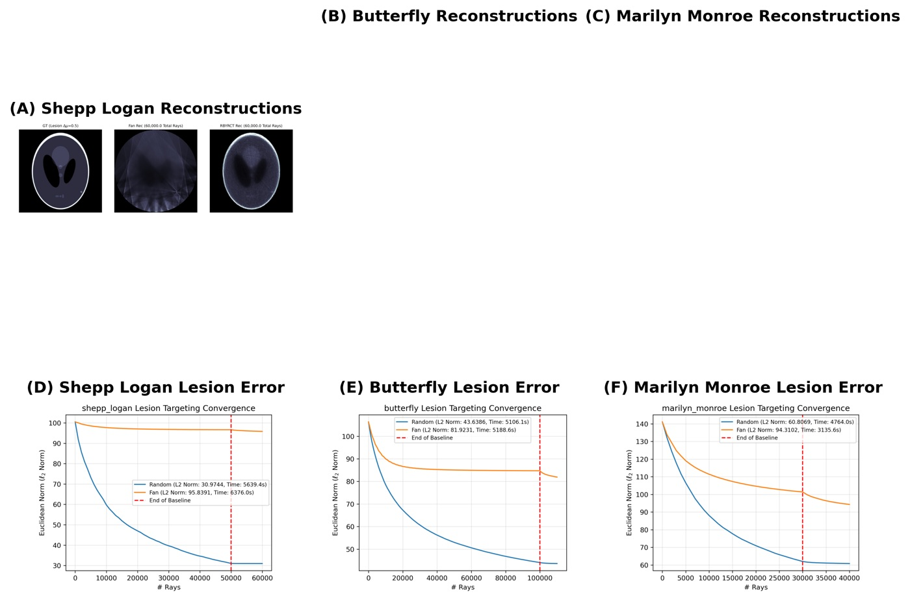
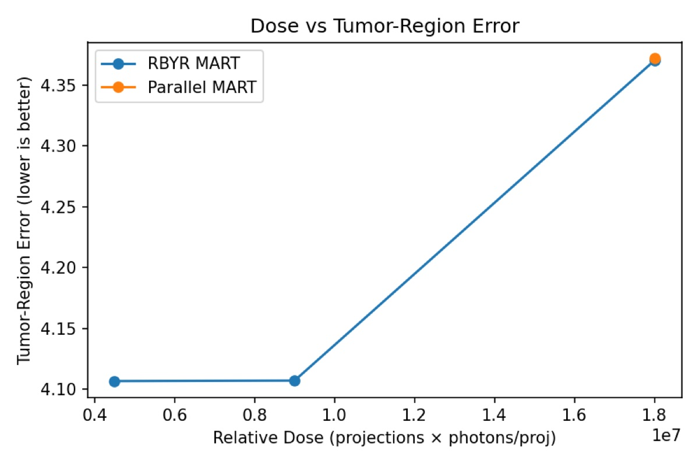

Inspection efficiency
Inspection time · noise · resolution · defect information
Adaptive X-ray acquisition
Imaging that decides what to measure next. Janus Sphere Innovations is developing RBYRCT: adaptive imaging systems that use information from intermediate reconstructions to guide subsequent measurements.JSI is developing adaptive X-ray acquisition and Ray-by-Ray Computed Tomography (RBYRCT), where information from an intermediate reconstruction can influence which measurement is acquired next.
Current work includes computational validation, acquisition-policy research, and development toward a physical closed-loop prototype.
In industrial CT, adaptive measurement selection could be useful where inspection time, image noise, defect detectability, resolution, and production throughput compete for the same acquisition budget. JSI is investigating whether closed-loop acquisition can make those tradeoffs more deliberate.
Inspection time · noise · resolution · defect information
Dose · diagnostic information · scan experience · time
The Janus Sphere mark becomes a moving field: layered blue glass, silver light, and ray paths bending around the idea at the center.
Janus Sphere advances RBYRCT through staged evidence: computational validation, physical closed-loop acquisition, application-specific testing, and then responsible translation into industrial or medical imaging systems.
Define sparse CT as a ray-by-ray decision problem.
Identify where adaptive rays can preserve information with fewer measurements.
Turn reconstruction theory into controllable acquisition and feedback systems.
Compare policies, phantoms, noise models, and ray budgets in software.
Build research instruments that expose decisions, uncertainty, and evidence.
Measure performance against controlled targets, baselines, and repeatable tests.
Evaluate biological relevance where the evidence and ethics support it.
Design studies, safety cases, and workflows for real medical settings.
Package validated capability into products, partnerships, and deployment paths.
A credible imaging technology has to grow inside the language of medical device evidence, safety, and repeatable engineering practice.
RBYRCT is an imaging problem, but also a control, sensing, and decision problem. The strongest ideas may come from neighboring fields.
The WebGL instrument is one visible surface of a larger research arc: turn ray selection into a measurable, auditable control problem for sparse CT reconstruction.
If acquisition policy, reconstruction state, and target uncertainty are linked tightly enough, RBYRCT may preserve useful information while reducing unnecessary measurements.
Which ray-selection policies maximize diagnostic information under fixed budgets?
The live instrument shows policy comparisons, ray budgets, and reconstruction telemetry.
Noise, motion, limited-angle behavior, dose claims, and clinical utility remain open.
Stress-test phantoms, lesion targets, adaptive policies, repeatability, and failure modes.
Compare fan, random, and adaptive policies across controlled phantoms.
Move from image examples to repeatable target and noise experiments.
Test performance against measured hardware, calibration, and acquisition limits.
Define biological relevance, safety rationale, and ethical study gates.
Translate validated evidence into study protocols and medical workflows.
RBYRCT is being organized as a medical-technology evidence program: intended use, risk, design inputs, verification, validation, and requirements traceability are part of the work from the beginning.
Our job is not to claim a better CT system prematurely. Our job is to build the evidence chain that would let such a claim survive physics, software, regulatory, clinical, and human-factors scrutiny.
The company thesis is that RBYRCT is a control problem as much as an imaging problem: choose the next ray, update the reconstruction, quantify uncertainty, log the decision, and trace every result back to a repeatable test.
We are studying whether ray-level acquisition policies can preserve diagnostic information while avoiding unnecessary measurements.
The internal research program treats acquisition as a closed loop: an initial scout estimate, adaptive ray selection, and MART-family reconstruction updates.
The risk file has to cover the ways an adaptive imaging system can be wrong, overconfident, poorly calibrated, or hard to use.
Simulation is the beginning. The real program is to convert promising behavior into repeatable phantom, bench, software, and workflow evidence.
Internal RBYRCT studies suggest that stochastic and adaptive ray policies can reduce coherent artifacts, prioritize high-residual regions, and improve sparse reconstruction behavior in controlled phantoms.
Dose reduction, lesion detectability, scan time, and clinical utility claims must survive physical phantom work, bench performance testing, regulatory review, and appropriately designed clinical studies.
The roadmap includes FDA pathway analysis, ISO 13485 quality-system thinking, ISO 14971 risk management, design controls, verification, validation, and human-factors engineering.
Current status: research simulation and engineering development. RBYRCT is not cleared or approved for clinical diagnosis, patient care, or treatment decisions.
Conventional CT workflows often assume dense or structured ray acquisition. RBYRCT explores a different control surface: choose, score, and use each ray as part of an adaptive reconstruction loop.
The current work compares fixed fan sweeps, random sparse rays, and targeted policies against visual and quantitative reconstruction feedback.
Choose each ray from a policy: fan, random, lesion-aware, or uncertainty-driven.
Trace through the phantom and update reconstruction state from sparse evidence.
Use coverage, error, and target-region feedback to decide where the next rays go.
These public-safe 3D studies translate the RBYRCT thesis into geometry: source, steering array, target, detector, feedback loop, and reconstruction evidence in one visual language.

A clean no-text render for explaining the basic physical layout without locking the invention to a single hardware implementation.

The system story becomes explicit: aim, measure, reconstruct, update the policy, and preserve the decision trail.

Non-ionizing optics can help explain steering, sensing, and feedback before the project enters x-ray hardware questions.

A compact bridge from visual explanation to technical diligence: policy comparisons need quantitative evidence behind them.
The title names the ambition. The public research claim is narrower and testable: RBYRCT studies whether dose-limited imaging can be treated as an information-allocation problem, ray by ray.

The book develops Ray-by-Ray Computed Tomography as a proposed adaptive CT framework: after an initial low-dose scout scan, subsequent rays can be directed toward uncertain regions, high-gradient structure, or candidate lesions rather than spent uniformly across the field.
Build an initial uncertainty map with a bounded opening scan.
Score candidate rays by structure, residual error, and local risk.
Spend the next rays where they can reduce ambiguity the most.
CancerZap turns the book's argument into a public, adjustable research sketch. Move the controls to see how scout dose, ray budget, structural uncertainty, and candidate-lesion focus shift the simulated acquisition policy.
A scout scan gives the system an initial map of anatomy, gradients, and unresolved regions. CancerZap then treats later rays as a limited budget to allocate toward the parts of the reconstruction still asking the hardest questions.


CancerZap is a research and education simulator for the book companion. It is not a medical device, not a diagnostic tool, not medical advice, and not cleared or approved for patient care.
These images show sparse-ray reconstruction behavior across phantoms, policies, and ray budgets.

Experiment ranges across phantom families.
Fan, random, and adaptive candidates expose sampling tradeoffs.
Not a clinical device; built for scientific exploration and collaboration.
RBYRCT asks a concrete question at every step: which ray should be measured next, and how much does that decision improve the reconstruction?
Adaptive policy concentrates rays around high-information regions while preserving a global coverage floor.
The demo lets visitors compare adaptive, random, and fan-beam sampling, watch reconstruction telemetry, and preserve a shareable run state at demo.janus-sphere.com.